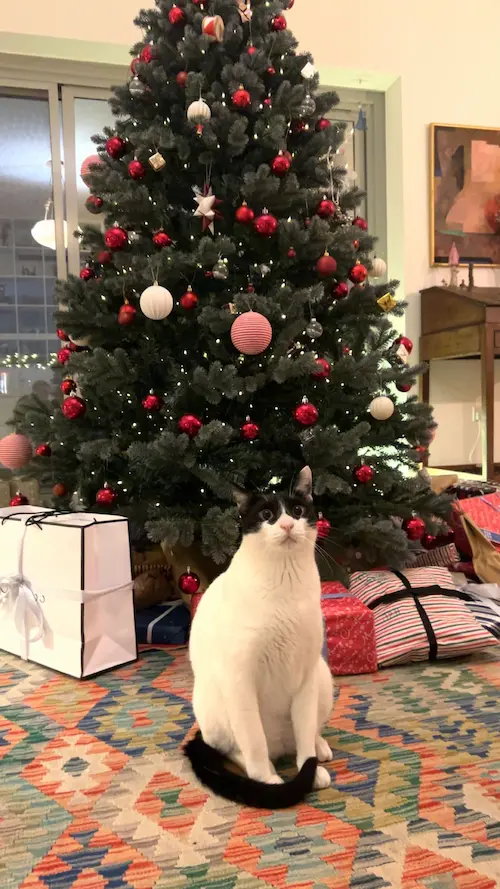

↩
Mit Kæledyr
Mort

Min kat hedder Mort, han er 5 år gammel nu, og vi fandt ham på gaden. Han er meget speciel, har masser af energi, elsker at lege, men elsker mad endnu mere.
Her er lidt om Mort
Er sort og hvidt
Kan godt lide at jage fugle
Nysgerrig
legesyg
Energisk
Tung
Læs mere om hvordan du kan hjælpe herreløse katte
Dyrenes Beskyttelse
.